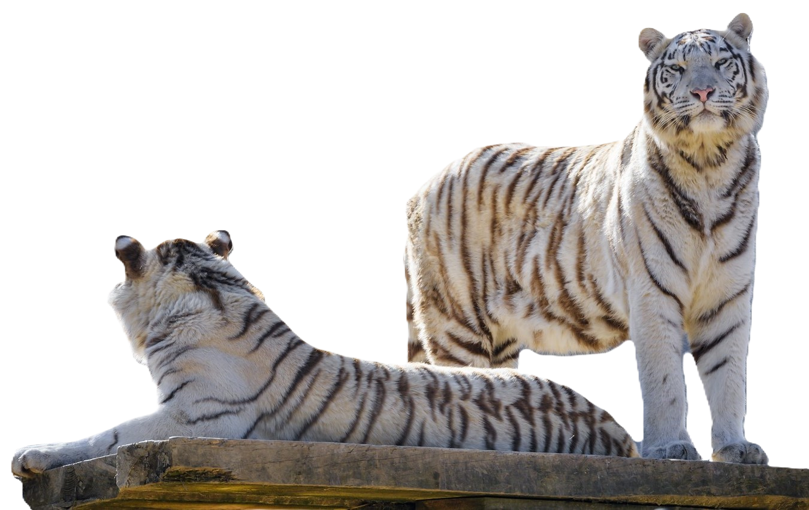

BEHAVIOUR

White Bengal tigers are solitary, territorial,
and stealthy hunters, preying mainly on deer
and boar. In captivity, they show reduced
aggression and greater social adaptability
due to human interaction, while remaining
active and instinct-driven.
image credit: Tambako The Jaguar, flickr